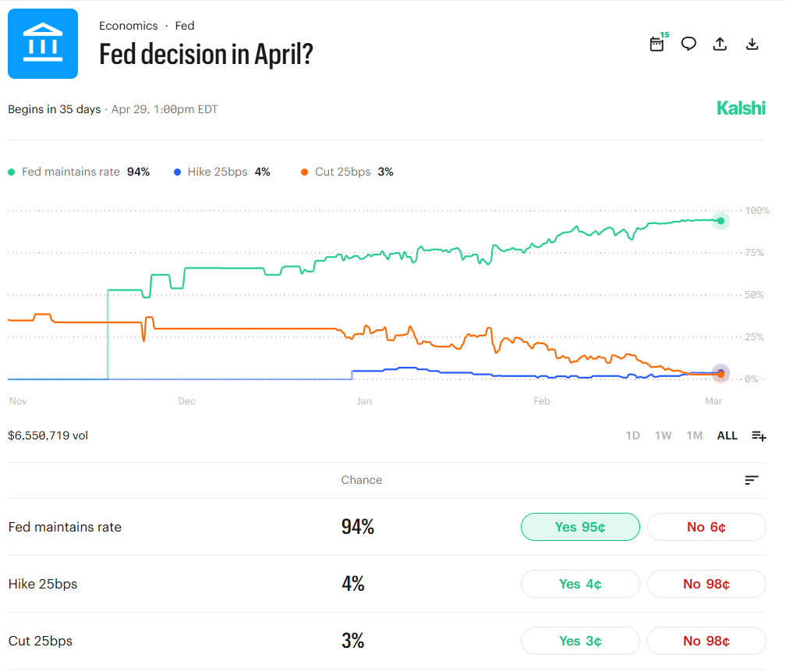
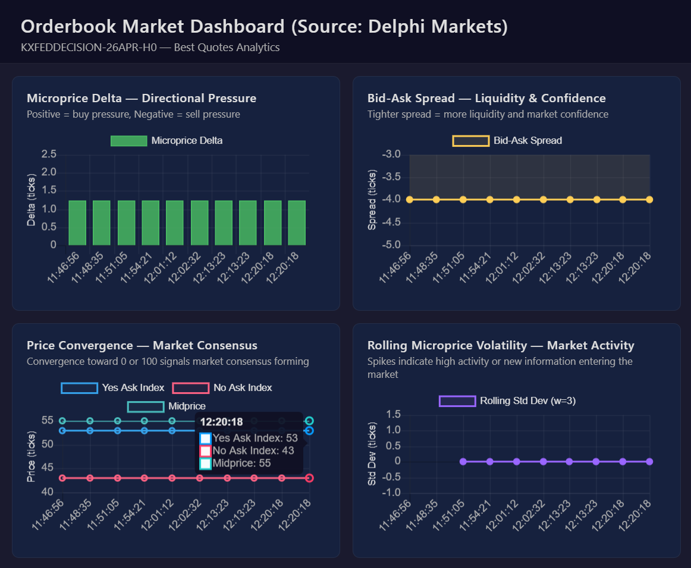

BS METER: 8/10
Along with every other financial derivative governed by the CFTC (Commodities Futures Trading Commission), prediction markets have faced accusations of gambling since the start.
Okay by definition, gambling is the act of playing games for the chance of money, or betting on the outcomes of future events. I have to say, prediction markets do fall into the Oxford definition, but society is just x1003895837458324 times more unproductive than it should be if people are claiming that it is JUST gambling. I'll prove to you it's more than that. Traders get real information to act on from the orderbook details, the depth in volume, the live probabilities, and etc. Plus, with tools like Delphi, the prediction market infrastructure layer, benchmarking elections, macro-outcomes, and financial markets becomes easier and easier.
What mainstream narratives say
Mainstream narratives agree that it’s just gambling rather than a tool for forecasting. Currently, Axios says that 61% of adults say prediction market trading is “more akin to gambling,” only 8% say “more akin to investing,” and also frames markets as a “controversial yet popular method for wagering” on sports, politics, business, news, and entertainment.
In addition, when CNN was covering the Trump family’s Truth Predict platform, they repeatedly call prediction markets a “new facet of sports wagering” and says casino operators are alarmed by “sports‑style wagering” exploding on prediction markets, positioning the entire sector as an off‑casino betting product. Channels like CNN agree that prediction markets are far from forecasting tools or the next Bloomberg Terminal and closer to DraftKings.
Debunking Gambling Accusations
Look at the April Fed decision market sitting at $6.5M in volume on Kalshi and $27.2M on Polymarket. Right now, they’re both saying there’s about a 95% chance the Fed does nothing, a 3% chance of a rate hike, and tiny odds on any kind of cut. This is a live probability forecast that was sourced from the crowd on prediction markets of what the central bank will do, and this is the exact type of data that traders pay attention to, whether or not CNN called it a casino or not

Still think prediction markets are just gambling? Zoom in at and we get even more “Bloomberg Terminal” than “DraftKings.”

Delphi Markets can further bring prediction markets closer to real signals in the macro world. Delphi Markets shows that the yes‑side, no‑side, and midprice all cluster around the mid‑50s over time in the price convergence panel, which is a sign that the market’s slowly agreeing on a fair price, not random swings.
The microprice delta stays small and steady instead of spiking all over the place, which is what you expect when people are trading around a shared forecast. The Bid‑Ask Spread is flat and tight the entire time. In a casino/sports-betting, the house gives you a huge built‑in edge against you. Here, the gap between the best bid and best ask is just a few ticks. Most importantly, the market reacts to headlines and data, not to spur‑of‑the‑moment adrenaline like poker or sports-betting.
My thoughts
All of the orderbook details and live probabilities you get from prediction markets just elevates prediction markets from the rest of gambling. Plus, Fed researchers said that Kalshi can outperform traditional derivatives and survey forecasts on key economic indicators, and prices on these markets adjust differently that in sports-betting, contradicting what Axios and CNN reports.
I think the irony is that the same news outlets calling these platforms “gambling” will also quote their odds the moment they line up with a narrative about war, recession, or elections...
BS METER: 8/10
Until next time,
Viviana Chen